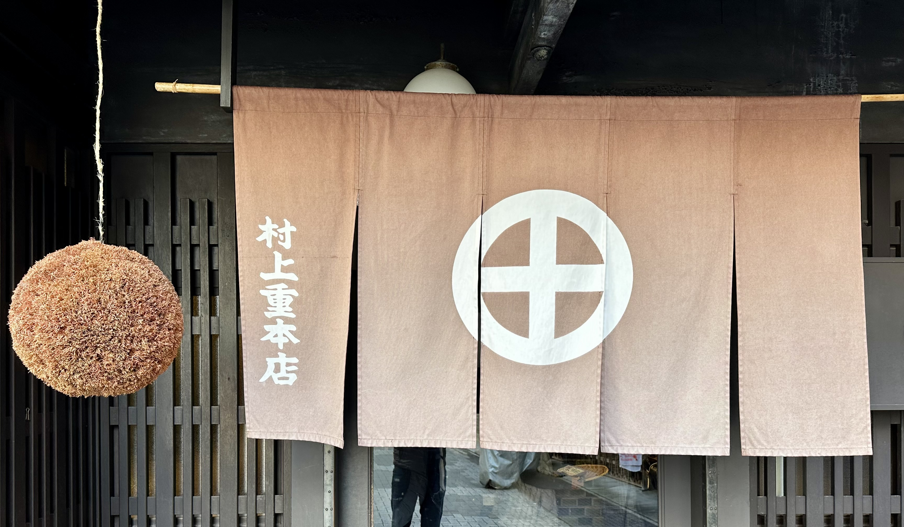
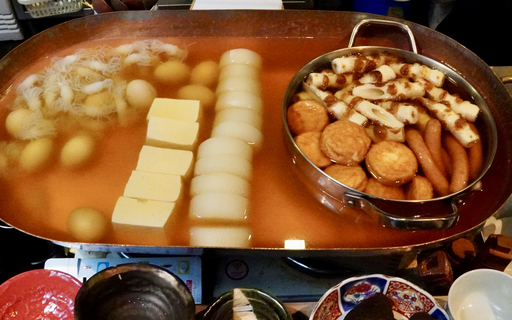
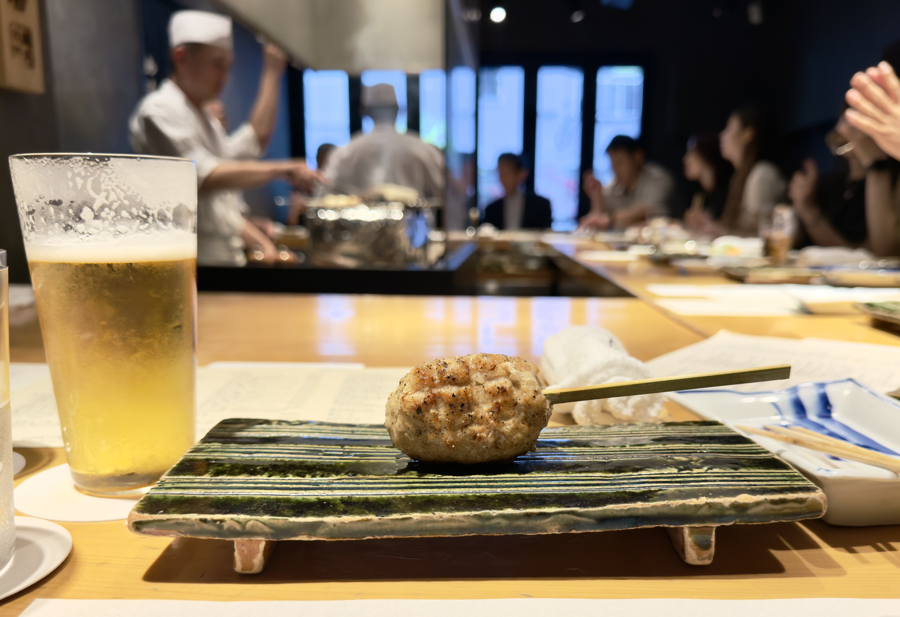
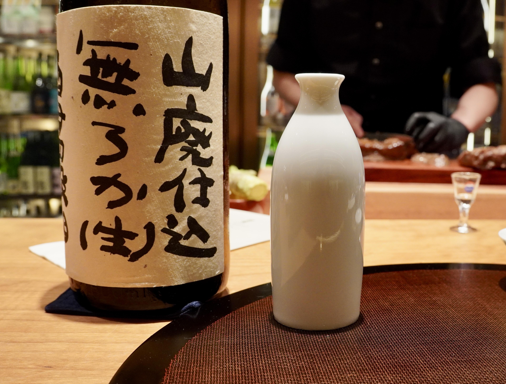

Craft

Kuroemon Kumano fires kilns in Fukui and does not explain himself
The vessels come out rough, glazed in dragged whites and iron browns, the rims unfinished where the fire decided. He works in the lineage of Echizen ware — one of the Six Ancient Kilns.

The fishmonger who still makes his own ankimo
Most ankimo on most counters in Tokyo arrives pre-made, in vacuum bags. At Sakana Bacca it doesn't. The fishmonger cures the monkfish liver himself every winter — salt, sake, steam, time.

A Kyoto pickle shop that has been slicing turnips the same way since 1832
Murakami-jū Honten sits in a back alley off Shijō Kawaramachi, behind a brown noren stamped with a white circle-and-cross. The shop opened in 1832 — Tenpō 3 — and built its name on senmaizuke.
Food

What sake does at the sushi counter
The Edo sushi meal has a rhythm. A cup of junmai, room temperature or just warmed, sits inside the rhythm rather than next to it.

Oden and warm sake: why this pairing works
Oden looks like a mystery from the outside — a copper pot divided into sections. Cold sake fights a long-simmered broth. Warm sake disappears into it.

The bonito runs north in spring and south in fall, and the sake changes with it
Katsuo crosses Japan twice a year. The spring fish wants a sharp junmai served cool. The autumn fish wants a hiyaoroshi with weight.

Tsukune: a brewer's family recipe, written down
Chicken tsukune, breast and thigh both, ginger and green onion, a lemon-soy glaze cooked down in the same pan. Forty-five minutes, four skewers, one bottle.
Seasons

Hiyaoroshi rests through summer and meets the Pacific saury at the door
Hiyaoroshi is sake pressed in late winter, pasteurized once, and left alone until the outside air matches the temperature inside the tank.
Shinshu is the sake that smells like the brewery it came from
By February the first tanks are pressed, and what comes out is shinshu — new sake, unblended, shipped while it still tastes like the room it was made in.